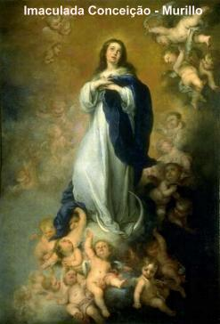

Anne 2002
Dans le 16 octobre,
Sa Saintet Le Pape Jean Paul II a commmor le 24e anniversaire de Pontificat,
et a proclam  travers de la Lettre "Apostolique
Rosarium Virginis Mariae" l'anne de Rosaire: d'octobre 2002
octobre 2003. En cette opportunit il a joint les "Mystères Lumineux", prière du Chapelet. Sóur
Lucia, seulement survivant des Apparitions de NOTRE DAME sur Fatima, dans sa
livre "L'Appel du Message de Fatima"
, elle a employ beaucoup des pages la demande de la VIERGE MARIE:
"Priez le Chapelet chaque jour". Cette recommandation cest tant important qui NOTRE MÈRE TRS SAINT
a rpété dans toutes les Apparitions, en suppliant l'humanit qui
prie le Chapelet et qui ne
devez pas se proccuper seul avec le travailà.
travers de la Lettre "Apostolique
Rosarium Virginis Mariae" l'anne de Rosaire: d'octobre 2002
octobre 2003. En cette opportunit il a joint les "Mystères Lumineux", prière du Chapelet. Sóur
Lucia, seulement survivant des Apparitions de NOTRE DAME sur Fatima, dans sa
livre "L'Appel du Message de Fatima"
, elle a employ beaucoup des pages la demande de la VIERGE MARIE:
"Priez le Chapelet chaque jour". Cette recommandation cest tant important qui NOTRE MÈRE TRS SAINT
a rpété dans toutes les Apparitions, en suppliant l'humanit qui
prie le Chapelet et qui ne
devez pas se proccuper seul avec le travailà.
Ce ralit peut faire les gens
conjecturer: Quelle sera la raison parce que NOTRE DAME a demandá nous pour
prier le Chapelet ou Rosaire chaque jour, avec tant d'insistance, et n'a demandá
pas nous pour participer de la Saint Messe chaque jour"
Sans mettre dans considáration la
valeur de la Saint Messe qui est incommensurable parce que c'est les plus
complets des prières, pourquoi c'est le mmorial de la Vie, Passion, Mort et
Glorieuse Rsurrection du SEIGNEUR JÉSUS, la rponse c'est três simple et
comprhensible : Elle nous invite par que nous priassions le Chapelet ou Rosaire
dans le quotidien parce quest une prier qui parle avec DIEU et DIEU cest un
PÈRE affectueux, rempli de piti, de bont et de miséricorde, toujours IL est
avec le "CUR ouvert" pour entendre notre supplications. Toutefois, si NOTRE DAME nous ayons
eu demandá pour participer chaque jour dans le Saint Messe, beaucoup des peuples
prsenteraient raisons pour justifier son l'absence et ils diraient que pour eux
ne seraient pas possible, pour motifs de travail, des autres compromis et des
obligations. Cependant, la Prire du Chapelet est accessible toutes les gens:
personnes pauvres, riches, sages, ignorants, hommes, femmes, vieilles et jeunes.
Toutes les personnes de bonne volonté, peuvent prier le Chapelet ou Rosaire, dans
l'glise avant du Saint Sacrement, comme dans la maison, dans famille ou seul,
dans le travail, dans le transport et même sur la rue. Aussi, le horaire ne
c'est pas important. Le Chapelet ou Rosaire peut être pri par le matin,
l'après-midi ou dans la nuit. galement il peut être pri dans parcelles : une
dizaine ou Mystre après le dájeun matinal ; làautre dizaine ou Mystre durant
le matin ; une Mystre après le dájeuner ; làautre dizaine avant le diner et la
dernire dizaine du Chapelet sur le nuit. Pour cette raison, tout le monde, sans
exceptions, est invit pour le prier, inclusivement ces personnes qui ont la
possibilit de frquenter dans le quotidien le Saint Messe ; aussi ils ne
devraient pas ngliger de la prière du Chapelet ou Rosaire. Cependant c'est
ncessaire de comprendre, prier le Chapelet dans un autre horaire, jamais dans
le exact moment dans que participe de la Saint Messe.
La mditation des Mystères du
Rosaire nous transportons proche de DIEU et de notre MÈRE TRES SAINT, en se revtant notre esprit de confiance et paix, au delà de stimuler la volonté et
donner vigueur les initiatives, en proportionnant une agrable joie
intrieur.
revtant notre esprit de confiance et paix, au delà de stimuler la volonté et
donner vigueur les initiatives, en proportionnant une agrable joie
intrieur.
Les gens qui rclament en disant
que le Chapelet cest une prière vieille et monotone, dá la rpétition des
prières, ils sont ncessits de se souvenir que dans notre vie tout se passe
dans une continue rpétition des mêmes actes. Le DIEU veut ainsi ! Pour vivre,
nous avons toujours quaspirer et quexpirer l'air des poumons de la même façon.
Le cœur bat dans le même rythme continuellement et le soleil, les planêtes et
toutes les toiles, ils suivent strictement sa trajectoire pendant les siècles.
Aussi le jour se passe après le nuit, anne après anne, de la même façon et les
plantes germent dans le printemps, ils couvrent des fleurs, ils donnent des
fruits. Finalement, tout dans la vie obit un rythme et travaille dans parfait
syntonisation avec la Volont de DIEU! Et aucune personne n'a dit jamais que ce
procdá c'est monotone ! Et vraiment ne peut pas dire, parce que toutes ces les
choses sont partie du merveilleux Travail Divin. Dans la vie spirituelle c'est
aussi de la même façon, parce que nous avons le besoin de rpéter
continuellement las mêmes prières et les mêmes actes de foi, d'espoir et
charit, pour nous avons une vie dans plànitude, considárant que notre vie est
une participation continue dans la Vie de DIEU. Prier et demander toujours ne
signifie pas qui nous mfions de la gentillesse et bont Divine, et alors, nous
avons le besoin de souvenir Le SEIGNEUR pour que IL n'oublie pas de notre
demande. Non ! Ce n'est pas ainsi! Rpéter la Prire est un geste d'humilit, et
de beaucoup de confiance dans DIEU. C'est avoir la certitude que le DIEU est si
bon, que malgr notre beaucoup des péchés, IL accepte le notre insignifiant
sacrifice de la rpétition de prière, comme si ait été une dámonstration
grandiose et Éloquente de notre amour. Donc, les personnes qui prient le
Chapelet dans le quotidien, sont comme làenfant affectueux qui chaque jour ils
ont quelques minutes de son temps pour visiter Le PÈRE TERNEL, le faire
compagnie et le manifester gratitude pour tout qu'IL fournit nous dans notre
vie. C'est aussi le moment pour confirmer qui nous sommes VOS ordres, qui nous
voulons recevoir les conseils Paternels et l'orientation ncessaire pour notre
existence. Quelquesó uns pourront dire : mais comment c'est possible si nous ne
voyions pas DIEU? Nous ne voyions pas le CRÉATEUR avec les yeux du corps mais
nous pouvons l'entendre toujours et voir LUI avec les yeux et les oues de
l'me. Et conscient de ce ralit, dans le moment de notre prière, nous devons
demander Le SEIGNEUR la bndiction Divine, parce qu'il gardera notre vie et
il remplira notre esprit des grâces et des vertus ncessaires pour vivre, dans
ordre de qui nous puissions de continuer avec la mission qui IL même nous a
confi. Dans ces minutes merveilleuses de prière, se passe l'change prcieux et
ineffable de l'amour, qui unit la crature au CRÉATEUR, en tablissant l'union
du fils avec le SAINT PÈRE et du SAINT PÈRE tous SES enfants. Le SEIGNEUR
rempli de bont, rpand torrentiellement SON infini Amour dans l'intrieur du
cœur de tout cette que recherche pour SA affectueuse et paternelle protection.
LES AVANTAGES
La Prire du Chapelet ou Rosaire
est une providence qui seulement prsente des avantages, et il est constitu par
un
groupe de prière simple, toujours rpété, presque mcaniquement.
Vridiquement il a dans sa simplicit une force extraordinaire, dámontr dans
impressionnants chemins au long des siècles au mettre Satan en fuite de une
façon direct et effectif. Beaucoup de faits se sont passés et attestent la
valeur du Chapelet et du Rosaire, comme auxiliaire prpondárant pour gagner les
forces du mal, au delà de rvÉler comme en tant un instrument efficace pour
atteindre de Le SEIGNEUR, nêtres objectifs dans la vie, une protection
vigoureuse contre les catastrophes et une aide prcieuse dans la solution des
difficults journalires. Et plus, la personne qui prie gagne beaucoup des
indulgences que l'glise concde la rcitation journalire du Chapelet.
1) Concde Cinq annes
d'indulgences pour chaque rcitation particulier du Rosaire ou Dix annes, s'il
été fait par un groupe de personnes.
2) Concde un Indulgence plànire,
dans le dernier dimanche de chaque mois, pour les personnes qui prcdemment, dans groupe, ont rcit le Rosaire
trois fois, dans les semaines prcdentes, et aussi, si il Confesser ou si il est dans
"tat de grâce",
et recevoir làEucharistie dans la Messe, et visiter une glise ou Oratoire de Sa Saintet
Le Pape, prier LE NOTRE PÈRE, un JE VOUS SALUE MARIE et une GLOIRE, pour les intentions
du Pape, en le jour mentionn.
3) Pendant le mois d'octobre,
làglise concde une indulgence de sept annes, sur tous les jours, pour la
rcitation d'un Chapelet.
4) Lglise cÉlàbre la Féte du
Rosaire dans le premier dimanche d'octobre. Dans le Féte ou pendant l'octave de
la commmoration (jusque le huitime jour après la Féte), si Confesser ou être
dans "tat de grâce", recevoir la communion dans la Messe et visiter une glise ou Oratoire
Public, et aussi, prier pour le Pape les prières recommandáes, recevra une
indulgence plànire. Le jour officiel de la féte du Rosaire cest
7 d'octobre.
5) Pour les personnes qui rcitent
fervemment le Chapelet dans une glise, avant du Sacrement Trs Saint exposó  le public, ou même avant du Tabernacle ferme, cest concdá une indulgence
plànire, chaque fois.
le public, ou même avant du Tabernacle ferme, cest concdá une indulgence
plànire, chaque fois.
Dans cette manire cest vident
que le dávouement au Saint Chapelet ou Saint Rosaire, est une prvoyance digne
d'Éloges et de valeur incontestable, qu'il apporte seulement avantages pour le
fidále.
ORIGINE DU ROSAIRE
Au long des gnrations, dans
beaucoup des pays, toujours ont exist personnes qui se proccupaient dans
cultiver sa religiosit dans un chemin plus intense et affectueux, avec
l'objectif de plaire plus au SEIGNEUR. Et pour avoir un contrÉle sur le montant
de prières qui ont ralisó, ils ont adopt quelque artifice pour marquer, comme
par exemple : numèrer dans les doigts, utiliser de petits os, petites bois ou
roulà cailloux (petites pierres rondes), pour avoir un contrÉle sur la sóquence
des prières. Cet usage est confirm par l'histoire, parce que c'était une
habitude utilisóe frquemment par beaucoup des Chrtien, et aussi, pour
plusieurs moines et les ermites du dásert, après la naissance du Christianisme.
Dans l'Occident cette l'habitude a été cultive par les personnes
misóricordieuses et a acquis une fort impulsion dans la fin du siècle X, quand
les fidáles priaient "Le Notre Père" plusieurs fois, comme geste d'humilit et supplication de pardon pour ses péchés,
de la même façon que ils dáclaraient être disposition pardonner les personnes qui
ont fait les péchés contre eux. Avec l'objectif de favoriser telles exercices de
piti, a été fait courants qui ont facilit le compte des prières. Ces cordons
ont été divisós de dix dans dix boucles et la dernire boucle était plus paisse
pour faciliter le compte. Ces courants ont été appelàs de "Pater-noster".
Joint avec ce dávouement, augment
le culte a NOTRE DAME. Après la ralisation du Conseil d'Efs, c'était commun les
Chrtiens user expressions et mots retires des vnements vangÉliques, pour
saluer la VIERGE MÈRE. Sur le Concile d'Efs dans l'anne 431, les prrogatives
spéciales donnes MARIE par le CRÉATEUR ont été reconnues et a été dácrété le
Dogme de la Maternit Divine de la MÈRE DE DIEU. En le jour de fermeture du
Concile, après les admirables mots des Prêtres Conciliaires qui ont ressortis
les vertus et les prrogatives spéciales de la VIERGE MARIE, Sa Saintet le Pape
CÉlestine I, avec motion et larmes dans les yeux, s'est agenouillà avant
l'assemblàe et respectueusement a salu NOTRE DAME:
"Sainte Marie, MÈRE DE DIEU, priez pour nous, pauvres pécheurs, maintenant et
l'heure de notre mort. Amen". Dans la continuit des annes,
cette salutation a été unie avec cet que l'Archange Gabriel a fait MARIE, conforme
l'vangile de JÉSUS crit pour Luc: "Je vous salue
Marie, pleine de grâce, Le Seigneur est avec vous, Vous êtes bénies entre toutes
les femmes! (Luc 1,28) Et aussi, il a été unie l'autre salutation
qu'Elisabeth a fait MARIE, quand Elle est allée jusqu Ain Karin pour l'aider
dans les trois derniers mois de sa grossesse. Sa cousin Elisabeth était avanc
en ge et a eu besoin de compagnie. Elisabeth a salue MARIE: "... le fruit de vos entrailles est béni. (Luc
1,42) Ces trois salutations ont donn la origine JE
VOUS SALUE MARIE.
Cependant, la premire
manifestation efficace du Chapelet ou Rosaire, s'est passé dans le siècle XIII.
Dans l'anne 1204, le Prêtre Dominique de Guzman, fondateur de l'Ordre des
Prêtres Dominicains, il était proccupé avec les petits rsultats que ses zÉlàs
missionnaires ont obtenus, malgr la proclamation publique avec prches
exhaustifs et persóvrants. L'hrsie des l'Albigens a infestá le sud de France
et sótend dans toutes les rgions avec grande publicit. NOTRE DAME pleine de
bont et avec la gnrosit de toujours, ELLE a apparu Prêtre Dominique et le
a enseign prier le Rosaire comme forme efficace de combattre l'hrsie et
convertir le cœur des personnes. Le Prêtre Dominique et ses missionnaires ont
accueilli l'orientation Divine et ils priaient dans le quotidien avec une grande
ferveur, et de cette façon, ils ont obtenu les rsultats admirables contre les
hrtiques et aussi, dans la conversion de milliers de gens qui ont accueilli
aux enseignements de l'glise.
Approximativement dans l'anne 1570, siècle
XVI, les Ottomans étaient avec une notable puissance militaire. Ils ont été avec la possession du
Saint Sópulcre dans Járusalem et n'ont pas autorisó la visite des Chrtiens. Le
Pape Pio V, était féch et il a sóinquiété avec l'vnement. Après beaucoup de
tentatives sans succs, pour contourner tous difficults et laisser libres les
Lieu Saints par les Chrtiens, il a organisó une Croisade sur làordre de Dom
Jean d'Autriche qui était frre de Carlos V Roi d'Espagne et Empereur de Sacré
l'Empire Romain. La cÉlàbre Bataille Navale s'est passée dans le Golfe de
Lpante, le 7 octobre 1571, lorsque la marine Turque était avec une grande
puissance militaire et avait le double de bateaux des Croisades. Ils ont attaqu
férocement pour dátruire les Chrtiensó Les Chefs Croisades de genoux ont
demandá l'intercession de NOTRE DAME. Ils ont été inspirs pour prier le
Chapelet comme seulement forme pour vaincre l'ennemi. Alors, ils ont suivi le
conseil Divin. La mesure que la bataille a dáchan les Chrtien dans un chemin
surprenant et miraculeux ont été en extermin les hrtiques et coqurent la
victoire. Dans hommage, le Pape Pio V il a institu la Féte de NOTRE DAME DES
VICTOIRES. Il a deux annes plus tard, le Pape Grgoire XIII, a rappelà que la
victoire de Lpante était plus une victoire du Rosaire et a chang le nom de la
hommage: Féte de NOTRE DAME DU ROSAIRE.
notable puissance militaire. Ils ont été avec la possession du
Saint Sópulcre dans Járusalem et n'ont pas autorisó la visite des Chrtiens. Le
Pape Pio V, était féch et il a sóinquiété avec l'vnement. Après beaucoup de
tentatives sans succs, pour contourner tous difficults et laisser libres les
Lieu Saints par les Chrtiens, il a organisó une Croisade sur làordre de Dom
Jean d'Autriche qui était frre de Carlos V Roi d'Espagne et Empereur de Sacré
l'Empire Romain. La cÉlàbre Bataille Navale s'est passée dans le Golfe de
Lpante, le 7 octobre 1571, lorsque la marine Turque était avec une grande
puissance militaire et avait le double de bateaux des Croisades. Ils ont attaqu
férocement pour dátruire les Chrtiensó Les Chefs Croisades de genoux ont
demandá l'intercession de NOTRE DAME. Ils ont été inspirs pour prier le
Chapelet comme seulement forme pour vaincre l'ennemi. Alors, ils ont suivi le
conseil Divin. La mesure que la bataille a dáchan les Chrtien dans un chemin
surprenant et miraculeux ont été en extermin les hrtiques et coqurent la
victoire. Dans hommage, le Pape Pio V il a institu la Féte de NOTRE DAME DES
VICTOIRES. Il a deux annes plus tard, le Pape Grgoire XIII, a rappelà que la
victoire de Lpante était plus une victoire du Rosaire et a chang le nom de la
hommage: Féte de NOTRE DAME DU ROSAIRE.
Actuellement avec l'inclusion des
Mystères Lumineux, le Rosaire a quatre Groupe de Mystères : Mystères Joyeux,
Mystères Lumineux, Mystères Douloureux et Mystères Glorieux, c'est--dire, le
Rosaire est constitu par quatre Chapelets. Chaque Mystre est un groupe de
prier et correspond un Chapelet. Donc, le Chapelet correspond la quatrime
partie du Rosaire. Chaque Chapelet se compose de 50 "JE
VOUS SALUE MARIE" (dans 5 sóries de 10 grains) et par cinq
"LE NOTRE PÈRE" (chaque sórie
de 10 grains cest suivi d'un grain isolà, le grain de le Notre Père) avec divers prières dás le
dábut et la fin du Chapelet.
Le dávouement au Chapelet et au
Rosaire il a été toujours favorisó par les Pontifes Romains et mrite la
distinction spéciale le Pape Lion XIII qui a dátermin toutes les paroisses du
monde que le mois d'octobre est allé dádier la rcitation du Rosaire. Sa
Saintet a exalt les qualits de Rosaire en disant:
"... ce n'est pas une prière simplement vocal, mais une rpétition de prières
qui crent un climat de contemplation, qui nous permettons la mditation des
grands mystères de notre foi la mesure que nous avons pri chaque groupe de dix
JE VOUS SALUE MARIE du Rosaire".
IMPORTANCE DU ROSAIRE
L'glise par la voix des Bergers
confére les ses plus grandes victoires la rcitation misóricordieuse du
Rosaire de NOTRE DAME. Pour cette raison, la gratitude de la Chrtient est
manifestáe par les Pontifes : le Pape Urbain IV a dit: "Par le Rosaire, chaque jour descend de le Ciel une pluie de bndictions
sur les gens Chrtiens". Le Pape Sixte IV a parlà : "Le Rosaire est la prière opportune pour honorer DIEU
et le VIERGE MARIE, aussi bien que dáplacer pour três loin les imminents dangers du
monde". Le Pape Pio V a dit: "En parpillant ce dávouement parmi les Chrtiens, il rendrait propice
la mditation des mystères enflammãe par ces prières, et donc, ils commenceront
se transformer dans un autre homme, pendant que l'obscurit des hrsies disparatra
et brillera la lumire de la foi Catholique". Le Pape
Lion XIII a dit: "...Ainsi,
au rciter le Rosaire avec dávotion, nous sentons dans notre me une doux
onction, comme si nous ayons eu entendu la propre voix de la MÈRE CÉleste, que
aimablement nous apprenons les Mystères Divins et nous indiquons le chemin de la
Salut. Le Pape Jean Paul II a parlà: "Avec le Rosaire, les gens Chrtiens frquent l'cole de MARIE et lui-même
se laissent introduire dans la contemplation de la beaut du face du CHRIST et dans
l'expérience de la profondeur de SON amour. Le Pape Jean Paul II encore a
parlà: "Le Rosaire est le rsume de la Bible. En lui
nous allons méditer dans chaque mystère, tous les passages bibliques : les
Mystères du Bonheur (ou Joyeux - de l'Avis de l'Ange la rencontre du
GARON JÉSUS dans le Temple). Les Mystères de la
Lumire (ou Lumineux - du Baptme de JESUS l'Institution du Sacrement
de la Eucharistie). Les Mystères de la Afflige
(ou Douloureux - de l'Agonie de JESUS dans le Jardin SON Crucifixion)
et les Mystères de la Gloire (ou Glorieux - de
la Rsurrection de JESUS Couronnement de NOTRE DAME dans le Ciel).

 Revient l'Index
Revient l'Index